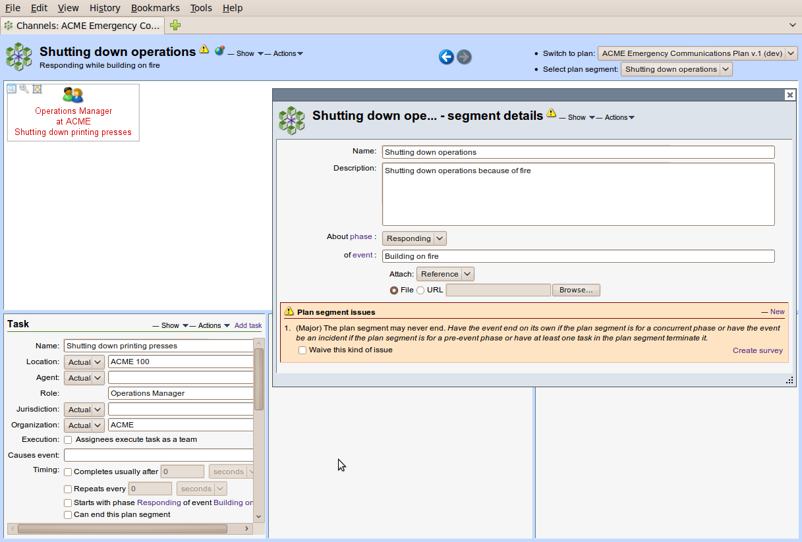

When a planner creates a new segment, it is given a default name and a scope.

It is also initially populated with a single, unspecified task. A task can not be removed if it is the last task in a segment.

A planner would typically first name and describe the segment, set its scope (identify an event phase and goals to be achieved), and edit the lone task. Then, additional tasks would be added, together with their information needs and capabilities. These tasks would be connected via information flows with other tasks in the selected segment or other segments.
